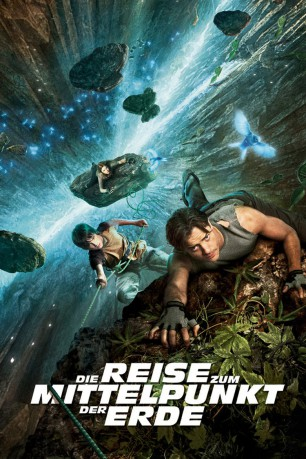

Alternativ: Journey to the Center of the Earth
 
 IMDB-Wertung: 5.8 / 10
IMDB-Wertung: 5.8 / 10  Metascore:
Metascore: 
Wissenschaftler Trevor Anderson geht voll und ganz in seiner Arbeit auf - und seinen Theorien über einen möglichen Zugang zum Mittelpunkt der Erde. Bewaffnet mit dem Tagebuch seines verschollenen Bruders macht sich Anderson mit seinem Neffen Sean auf den Weg nach Island, wo er mit Hilfe der attraktiven Bergführerin Hannah geheimnisvollen Spuren nachgehen will. Ein aufziehendes Gewitter lässt die Drei in einer Höhle Zuflucht suchen, wo sie nach einem Fehltritt Kilometer weit stürzen und sich im Kern der Erde wieder finden, wo sie auf Spuren von Andersons Bruder stoßen. Und auf Kreaturen, die seit Urzeiten nicht mehr auf der Erde leben.
Jahr: 2008
Dauer: 93 Minuten
FSK: 12
Land: USA Studio: Warner Bros.Tonspuren: DD5.1 - ,
Untertitel: Deutsch,
Auflösung: 1080p (1920x1080) Größe: 9195 MB
Genre: Action, Abenteuer, Familie, Fantasy, Sci-Fi
Regisseur: Eric Brevig
Drehbuch: Michael D. Weiss, Jennifer Flackett, Mark Levin, Jules Verne
Soundtrack: Andrew Lockington
Darsteller:
 Brendan Fraser als Trevor Anderson
Brendan Fraser als Trevor Anderson Josh Hutcherson als Sean Anderson
Josh Hutcherson als Sean Anderson Seth Meyers als Professor Alan Kitzens
Seth Meyers als Professor Alan Kitzens Kaniehtiio Horn als Gum-Chewing Girl
Kaniehtiio Horn als Gum-Chewing Girl Frank Fontaine als Old Man
Frank Fontaine als Old ManDatei: X:\2008(N-Z)\Reise zum Mittelpunkt der Erde, Die (2008, FSK12, 1920x1080) 3D.mkv seit 16.05.2015
Festplatte: HD 2008(G-Z)-2009(A-F)
 Es gibt insgesamt 91 Filme in der Gruppe '2008(N-Z)'
Es gibt insgesamt 91 Filme in der Gruppe '2008(N-Z)'